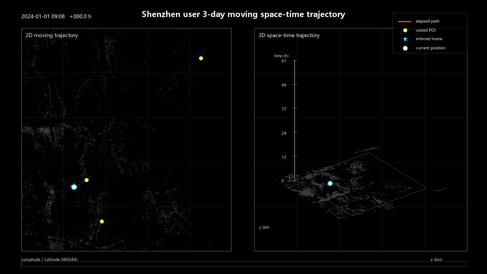

Urban Resilience
Modeling social system disruptions and recovery during extreme climate events and disasters for resilient cities.
面向韧性城市，建模极端气候事件与灾害中的社会系统扰动及恢复过程。
Urban Resilience / Spatial Behavior / Computational Urban Design
城市韧性 / 空间行为 / 计算性城市设计
My research interests focus on the interactions between space and human behavior under climate change and digital transformation, and their implications for urban planning and design.
我的研究关注气候变化与数字化转型背景下空间与人类行为之间的互动关系， 以及这些互动对城市规划与设计的影响。
I am affiliated with Shenzhen University. My recent work focuses on human behavioral responses and recovery modeling during extreme climate events and disasters, cyber-physical urban planning, computational urban design, and AI-enabled urban analytics for resilient cities.
我任职于深圳大学。近期研究聚焦极端气候事件与灾害中的人类行为响应及恢复建模、 网络-物理城市规划、计算性城市设计，以及面向韧性城市的 AI 赋能城市分析。
Recent publications and profile updates from Google Scholar.
Published work on flood-driven relocation behavior and urban-rural disparities in Zhengzhou.
Published research extending the theory of planned behavior to explain intra-city migration during extreme rainfall disasters.
Contributed to GeoShapley-based explainable GeoAI research on sustainable community satisfaction assessment in Chengdu.
Published work developing an environmental equity index for urban heat wave events.
Modeling social system disruptions and recovery during extreme climate events and disasters for resilient cities.
面向韧性城市，建模极端气候事件与灾害中的社会系统扰动及恢复过程。
Interactions between urban environments and human behavior, with a focus on behavioral transformation in the digital era.

关注城市环境与人类行为之间的互动，以及数字时代下行为模式的转型。
Interactive human-AI systems for collaborative decision-making in urban design.
用于城市设计协同决策的交互式人机智能系统。
Works listed by publication date on Google Scholar.
L Zhang, X Yang, Z Yuan, X Ma, D Kuang, K Li, Z Zhang, J Xiao, X Xie, et al.
Climate Risk Management 53, 100831, 2026
L Zhang, J Xiao
Urban Climate 65, 102750, 2026
W Zhang, L Zhang, J Li, S Guo, Q Hu, R Zhou
Sustainability 17 (22), 10261, 2025
X Ma, L Zhang, X Yang, Y Fan, F Hiroatsu, J Zhang, L Li
Environmental and Sustainability Indicators 26, 100608, 2025
W Zhang, C Zhang, L Zhang
Applied Geography 179, 103638, 2025
X Ma, L Zhang, X Yang, Y Fan, F Hiroatsu, J Zhang, L Li
Environmental and Sustainability Indicators 25, 100565, 2025
T Ma, Y Wang, L Zhang, W Hong, X Yang
Journal of Rural Studies 113, 103476, 2025
T Ma, W Hong, Z Cao, L Zhang, X Yang
Sustainable Cities and Society 106, 105396, 2024
K Li, H Fukuda, L Zhang, R Zhou
Energy and Buildings 311, 114136, 2024
Y Tan, H Fukuda, L Zhang, S Wang, W Gao, Z Liu
Urban Ecosystems 25 (4), 1353-1364, 2022
This course explores how digital technologies can enhance urban resilience across disaster preparedness, response, recovery, and long-term planning. It introduces the use of GIS, big data, artificial intelligence, and computational modeling to analyze population responses and recovery during extreme events. Students will learn how data-driven approaches support urban risk assessment, human behavior analysis, emergency management, and resilience planning.
本课程探讨数字技术如何提升城市在灾害准备、响应、恢复与长期规划中的韧性。 课程介绍 GIS、大数据、人工智能与计算建模在极端事件中人口响应与恢复分析中的应用。 学生将学习数据驱动方法如何支持城市风险评估、人类行为分析、应急管理与韧性规划。
This course introduces a human-AI collaborative approach to urban design, integrating generative AI, spatial analytics, and interactive digital platforms into the design process. Using interactive urban interfaces, students explore urban systems through real-time visualization, scenario simulation, and human-AI interaction. The course emphasizes collaborative decision-making, enabling students to evaluate design alternatives, and develop data-informed, human-centered urban design solutions.
本课程介绍面向城市设计的人机协同方法，将生成式 AI、空间分析与交互式数字平台整合进设计过程。 通过交互式城市界面，学生将借助实时可视化、情景模拟与人机交互理解城市系统。 课程强调协同决策，帮助学生评估设计方案、理解规划干预影响，并形成数据支撑、以人为本的城市设计方案。
3688 Nanhai Ave,
Nanshan District, Shenzhen
518000, China
Email: zhangliszu@szu.edu.cn
Scholar: Google Scholar profile